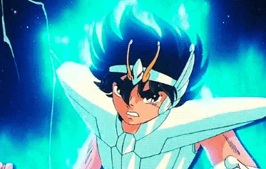
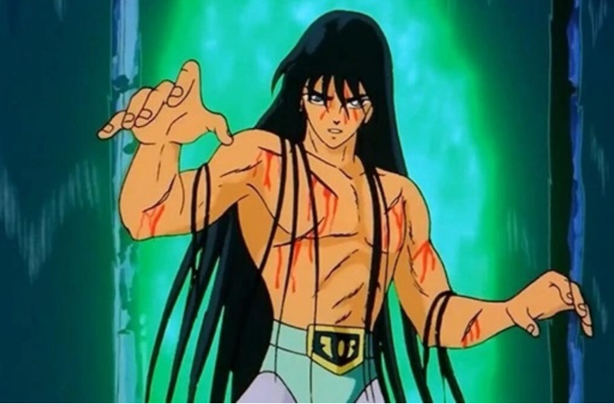
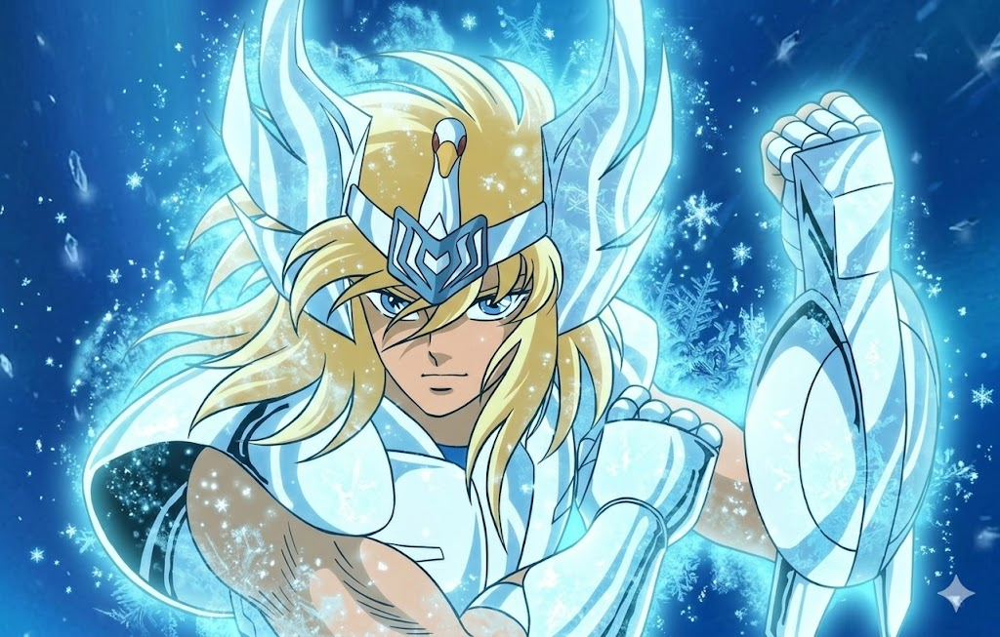
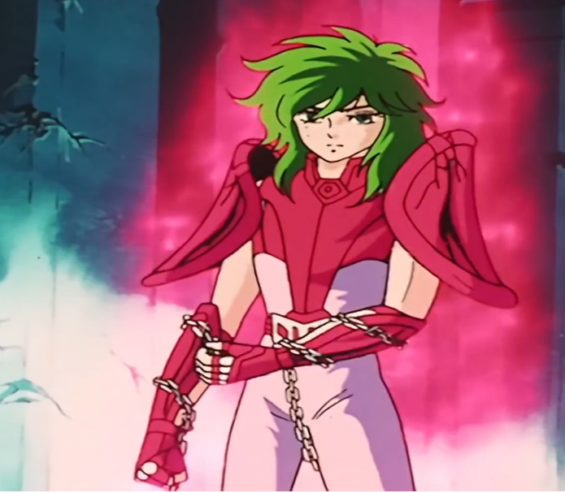
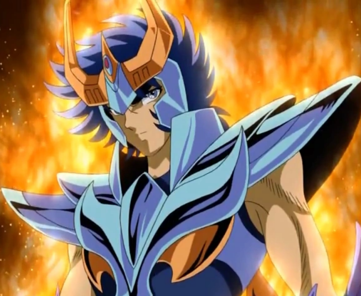
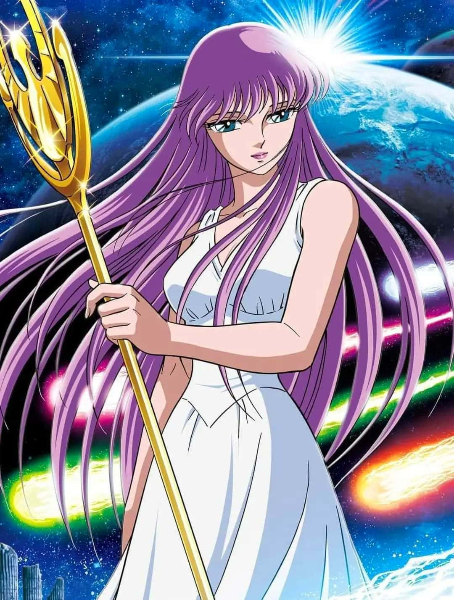

Pégaso
O cavaleiro de bronze da constelação de Pégaso e o protagonista obstinado da série. Conhecido por sua determinação inabalável, Seiya nunca desiste, não importa quão poderoso seja o inimigo. Seu golpe principal, o Meteoro de Pégaso, é capaz de disparar centenas de socos por segundo à velocidade do som.

Dragão
Treinado nos Cinco Picos de Rozan pelo Mestre Ancião, Shiryu é o mais sereno e sábio do grupo. Ele possui o escudo mais resistente entre as armaduras de bronze e é famoso por sua disposição ao sacrifício em nome da amizade. Sua técnica Cólera do Dragão manifesta uma força devastadora que reverte o fluxo de cachoeiras.

Cisne
Criado nas geladas terras da Sibéria, Hyoga domina as técnicas de congelamento aprendidas com o seu Mestre o Cavaleiro Camus de Aquário. Ele busca alcançar o "Zero Absoluto", a temperatura onde toda a matéria para de se mover. Seu golpe Pó de Diamante envolve os oponentes em uma nevasca mortal de cristais de gelo.

Andrômeda
Embora possua um dos cosmos mais vastos entre os cavaleiros, Shun detesta a violência e prefere resolver conflitos pacificamente. Ele utiliza as Correntes de Andrômeda tanto para uma defesa impenetrável quanto para um ataque preciso. Quando levado ao limite, seu golpe Tempestade Nebulosa revela um poder destrutivo imensurável.

Fênix
O irmão mais velho de Shun e o cavaleiro mais solitário e poderoso do grupo. Tal como a ave mitológica, Ikki sempre ressurge das cinzas, tornando-se mais forte a cada derrota. Com o Golpe Fantasma de Fênix, ele destrói a mente de seus inimigos, enquanto o seu Ave Fênix incinera tudo o que estiver em seu caminho.

Athena
A reencarnação da deusa da sabedoria e da guerra justa na era moderna. Inicialmente uma jovem herdeira, Saori desperta para sua divindade e assume a responsabilidade de proteger a Terra das garras de deuses malignos. Ela é a fonte de inspiração e a luz que guia seus cavaleiros na luta pela paz e pela justiça.